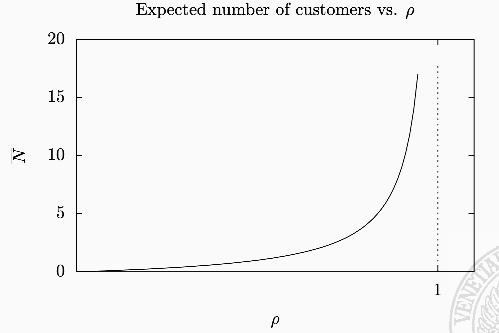
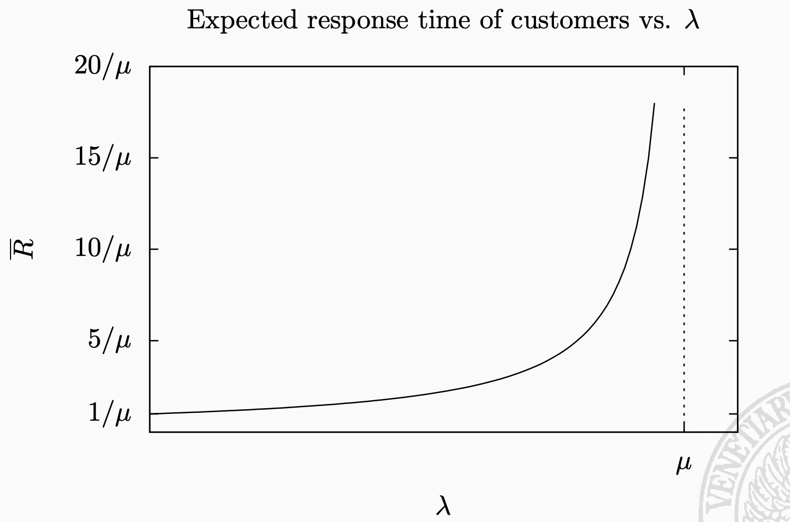
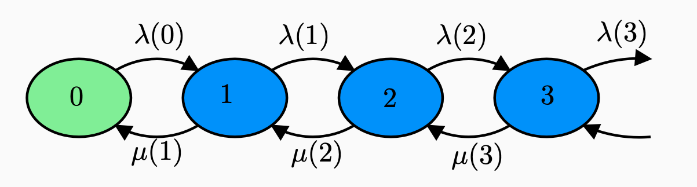
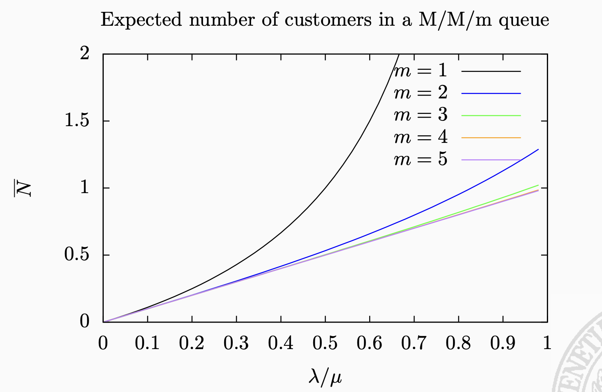
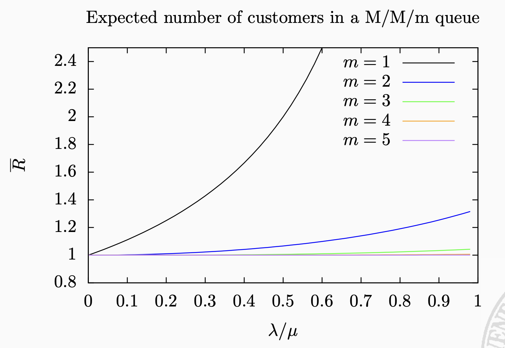
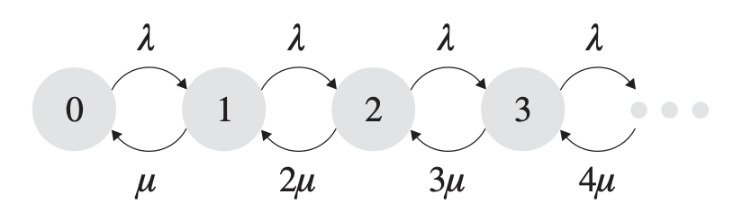

Queueing Theory
Queueing theory is the theory behind what happens when you have lots of jobs, scarce resources, and subsequently long queues and delays. It is literally the “theory of queues”: what makes queues appear and how to make them go away.
The goals of a queueing theorist are twofold. The first is predicting the system performance. Although prediction is important, an even more important goal is finding a superior system design to improve performance.
1 Terminologies
System capacity: it represents the maximum number of jobs the system can contain (both waiting and serviced).
Population size: it represents the number of potential jobs that can access the system, i.e. they are willing to enter the system.
Service discipline: policy through which the jobs are served.
- FCFS (First Come First Serve);
- LCFS (Last Come First Serve);
- FCFS/LCFS with preemption: this feature allows to remove the job from the service and putting it back to the queue;
- FCFS/LCFS with preemption and resume: same as previous, but it resumes the state of the job (it doesn’t waste the work done);
- PS (Processor Sharing): Simplified Round-Robin;
- IS (Delay Center or Infinite Services);
- SRPT (Shortest Remaining Processing Time).
Work-conserving discipline: a queueing discipline is work-conserving if:
- It never leaves idle a server that is allowed to work;
- It never wastes the work done on a job.
2 Kendall notation
It’s a fast way to represent queueing systems.
\(A/S/m/B/K/SD\)
- \(A\): inter-arrival distribution
- \(S\): service distribution
- \(m\): number of servers
- \(B\): system capacity (default: \(\infty\))
- \(K\): population size (default: \(\infty\))
- \(SD\): service discipline (default: FCFS)
Abbreviations for \(A\) and \(M\):
- \(M\): exponential (Poisson);
- \(D\): deterministic;
- \(G\): general distribution.
3 M/M/1 queueing system
The M/M/1 open model begins with the following assumptions:
- An average arrival rate \(\lambda\) is known;
- The system is running under an stable condition, i.e. \(\lambda < \mu\);
M/M/1 terminology indicates these features:
- Exponential independent inter-arrival times (Poisson arrivals);
- Exponential independent service times;
- Single server, infinite buffer, FCFS discipline.
3.1 Load factor
The load factor is defined as follows: \[\rho=\frac{\lambda}{\mu}\] and it represents the ratio between the arrival rate and the service rate.
We already observed that the queue is stable, i.e. \(\rho < 1\).
The steady-state probability of observing n jobs in the queue has a geometric distribution with ratio \(\rho\).
3.2 Expected number of customers
We have that \[\overline{N}=\frac{\rho}{1-\rho}\] And the steady-state probability to find the server busy (i.e. number of customers in the service room) is \[U=\rho=E[N_{s}]\] Recall that \(E[N]=E[N_{s}]+E[N_{q}]\), therefore \[E[N_{q}]=\frac{\rho}{1-\rho}-\rho=\frac{\rho^{2}}{1-\rho}\]
3.3 Expected response time
In stability conditions, we have \(X = \lambda\). We can compute the expected response time by Little’s theorem: \[\overline{R}=E[R]=\frac{\overline{N}}{X}=\frac{1}{\mu-\lambda}\] We know that \(E[S]=\mu^{-1}=\frac{1}{\mu}\), therefore \[E[W]=E[R]-E[S]=\frac{1}{\mu-\lambda}-\frac{1}{\mu}=\frac{\lambda}{\mu(\mu-\lambda)}\]
3.4 M/M/1 charts


3.5 Other useful relations in M/M/1
Probability to find the empty queue: \(1-\frac{\lambda}{\mu}=1-\rho\)
Length of idle periods in the system: exponentially distributed with mean \(\frac{1}{\lambda}\)
Average length of busy periods: \(X=\frac{1}{\mu-\lambda}\)
4 M/M/m queueing system
In today’s high-volume world, almost no websites, compute centers, or call centers consist of just a single server. Instead a “server farm” is used. The server farm is a collection of servers that work together to handle incoming requests. Each request might be routed to a different server, so that servers “share” the incoming load. From a practical perspective, server farms are often preferable to a single “super-fast” server because of their low cost (many slow servers are cheaper than a single fast one) and their flexibility (it is easy to increase/decrease capacity as needed by adding/removing servers).
The first “M” indicates that we have memoryless interarrival times, and the second “M” indicates memoryless service times. The third field denotes that m servers share a common pool of arriving jobs. For the M/M/k system, there is no capacity constraint

Since the incoming stream is completely independent from the system, we denote \[\lambda(n)=\lambda\] and the service rate is based on the number of \(n\) busy servers
\[\mu(n) = \begin{cases} n\mu & \text{n <= m} \\ m\mu & \text{otherwise} \end{cases}\]
4.1 Load factor
In this type of queue system the load factor is defined as follows: \[\rho=\frac{\lambda}{m\mu}\] Therefore, the system is stable if and only if \(\lambda < m\mu\)
4.2 Expected number of customers
Let \(C(m,\frac{\lambda}{\mu})\) be the probability of finding all the servers busy.
Assuming stability we have that \(\lambda = X\) where \(X\) is the throughput, and the expected number of customers is derived as follows
\[\overline{N}=E[N]=\frac{\rho}{1-\rho}C(m,\frac{\lambda}{\mu})+\frac{\lambda}{\mu}\]
4.3 Expected response time
\(\overline{R}\) is derived by Little’s theorem as follows \[\overline{R}=E[R]=\frac{C(m,\frac{\lambda}{\mu})}{m\mu-\lambda}+\frac{1}{\mu}\]
4.4 M/M/m charts


5 M/M/\(\infty\) queueing system
This dream situation can be modeled by a queueing system with an infinite number of servers, so that there is always a server to take an incoming job.
The interarrival times are Exponential with rate \(\lambda\), the service times are Exponential with rate \(\mu\), and there are an infinite number of servers.

In this case, we denote \[\lambda(n)=\lambda\] and \[\mu(n)=n\mu\]
And finally, since we have an infinite number of server, the throughput is always \(X = \lambda\), i.e. the system is always stable and the jobs don’t have waiting time at all.
5.1 Expected number of customers
\[\overline{N}=E[N]=\frac{\lambda}{\mu}\]
5.2 Expected response time
\[\overline{R}=E[R]=\frac{1}{\mu}\]
6 M/G/1 queueing system
An M/G/1 queue consists of a single server and queue with Poisson job arrivals (it holds the PASTA property), where the size (a.k.a. service time) of a job has a general distribution with mean \(\frac{1}{\mu}\) and variance \(\sigma^{2}\) and the stability condition is \(\lambda < \mu\), as usual.
In the M/G/1 queue, the jobs are pushed in the waiting queue represented by an infinite buffer.
6.1 P-K Formula
The formula states that the queue length (how many jobs are in the queue, waiting to be serviced?) depends not only on the ratio between the expected service time and the arrival rate, but also on the variance of the service time.
Since the numerator contains the variance, we can conclude that the average waiting time increases proportionally to the variance, i.e. FCFS sucks with a great variance.
6.2 Expected number of customers
\[\overline{N}=E[N]=\frac{\rho^{2}+\lambda^{2}\sigma^{2}}{2(1-\rho)}+\rho\]
6.3 Expected response time
(see waiting time below) \[\overline{R}=E[R]=\frac{\rho+\lambda\mu\sigma^{2}}{2(\mu - \lambda)}+\frac{1}{\mu}=\frac{\rho(1+CV^{2})}{2(\mu-\lambda)}+\frac{1}{\mu}\]
6.4 Expected waiting time
i.e. response time - service time: \[E[W]=\frac{\rho+\lambda\mu\sigma^{2}}{2(\mu - \lambda)}\] And, since \(\sigma^{2}=\frac{CV^{2}}{\mu^{2}}\), we compute \[E[W]=\frac{\rho+\lambda\mu\frac{CV^{2}}{\mu^{2}}}{2(\mu-\lambda)}\] Then, we eliminate the 2 \(\mu\) and we have \[E[W]=\frac{\rho+\frac{\lambda}{\mu}CV^{2}}{2(\mu-\lambda)}=\frac{\rho+\rho*CV^{2}}{2(\mu-\lambda)}=\frac{\rho(1+CV^{2})}{2(\mu-\lambda)}\] Where CV is the variance.
7 M/G/1/PS queueing system (Processor Sharing policy)
A policy is preemptive if a job may be stopped partway through its execution and then resumed at a later point in time from the same point where it was stopped (this is also called preemptive-resume).
The main problem with the M/G/1 queue is that the mean response time can be very high when \(\sigma^{2}\) is high (job size variability is high). Intuitively, short jobs queue up behind long jobs, resulting in long delays. Processor-Sharing, by contrast, is not negatively affected by high job size variability.
When a short job arrives, it immediately time-shares with all the jobs in the system. It does not have to wait for long jobs to finish. PS allows short jobs (which require just a few quanta of service) to get out quickly. time-sharing the CPU might allow an increase of overall system throughput in a multi-resource system. Imagine, for example, a multi-resource system, including a CPU, disk, memory, etc. It is useful to have many jobs running simultaneously (rather than just one job at a time), because jobs requiring different resources can be overlapped to increase throughput.
But PS is not better than FCFS for every arrival sequence:
- If the service time has a variance smaller than the exponential distribution with the same mean, then FCFS perfoms better than PS;
- Otherwise, PS performs better;
- If the variance is not known, it is better to opt for PS since it guarantees the performance indices of the M/M/1 queue independently of the distribution of the service time
7.1 Characteristics
- Poisson arrival process with intensity \(\lambda\)
- General service time with mean \(\mu^{-1}\)
- Single server
- Jobs enter in service as soon as they arrive but they share the processor with the other job in service. In fact, each job receives the same amount of computational power from the processor
- The waiting time is defined as the difference between the response time and the service time
Insensitivity of the M/G/1/PS queue: the performance indices depend only on the mean on the service time and the following moments are irrelevant (this is very different from the M/G/1 whose expected performance indeces depend on the variance of the service time).
7.2 Ages of Jobs in the M/G/1/PS System
The age of a job is the total service it has received so far. By definition, 0 <= age(j) <= size(j), where age(j) denotes the age of job j and size(j) denotes the (original) size of job j.
7.3 Terminologies
- \(E[x]=\mu^{-1}\)
- \(N[x]=\) expected number of jobs with age at most \(x\)
- \(T[x]=\) expected time spent in the system by a job of size x (i.e. bigger or equal than x)
7.4 Expected response time
We have the expected conditioned response time \[T[x]=\frac{x}{1-\rho}\] and the expected response time \[\overline{R}=E[R]=\frac{1}{\mu-\lambda}\] which is the same of M/M/1 queue (due to insensivity).
7.5 Conclusions about PS
The expected slowdown for a job of size x under the M/G/1/PS is a constant, independent of the size x. Remember that for non-preemptive non-size-based scheduling, the mean slowdown for small jobs was greater than the mean slowdown for large jobs. By contrast, under PS, all jobs have same slowdown. For this reason, people always refer to PS as fair scheduling.
8 Shortest-Remaining-Processing-Time (SRPT)
Under SRPT, at all times the server is working on that job with the shortest remaining processing time. The SRPT policy is preemptive so that a new arrival will preempt the current job serving if the new arrival has a shorter remaining processing time.
Observe that, under SRPT, once a job, j, starts running, it can only be preempted by a new arrival whose size is shorter than j’s remaining time. In particular, any jobs that are in the system with j, while j is running, will never run before j completes.
The assumption of this class of schedulers is that we know the service time of the jobs as soon as they arrive at the system, in advance (not applicable in many contexts).
At each epoch, the job with the smallest remaining processing (service) time will be served: in this way, small jobs overtake large jobs. This approach reduces the expected response time.
In general, we have these relations between SRPT and PS, given the size of a job:
\[\text{SRPT vs PS} = \begin{cases} \overline{R}^{SRPT} <= \overline{R}^{PS} & \text{small job size} \\ \overline{R}^{SRPT} >= \overline{R}^{PS} & \text{big job size} \end{cases}\]
From this relation, we can define:
All-can-win-theory: given M/G/1/PS and M/G/1/SRPT queues with the same parameters, if \(\rho<0.5\) then, for all \(x\): \[\overline{R}^{SRPT}(x) <= \overline{R}^{PS}(x)\]
This statement is true until \(\rho<=0.96\)
9 Least Attained Service (LAS)
Age based disciplines (in general):
- At each epoch, we take the decision on the job(s) to serve based on the amount of work they have received up to that moment
- In general we tend to favor the jobs that have received the smallest amount of work: the bet is that those who have obtained a lot of work, the will ask even more
- These disciplines work well when the service times are heavily tailed
LAS is a discipline is with preemption and resume, in which at each epoch, the scheduling discipline works as a PS only on the jobs that have recevied the least amount of service.
Hazard rate: if the hazard rate of a random variable is monotonically decreasing, it means that as time passes the time to completion increases => in terms of service time, it means that if we have given a lot of service to a job, this will probably need even more work (!)
LAS is the optimal scheduling discipline if we do not know the job size in advance (or its distribution) but the job size has monotonically decreasing hazard rate. We use it when we have many small jobs and a few huge jobs but we cannot say in advance who is small and who is big.
9.1 LAS implementation: PS+PS discipline
PS+PS workflow:
- We maintain two PS queues. Queue 1 has strict priority on Queue 2;
- We define a threshold T;
- When a job arrives it stays in Queue 1 until: either it finishes its job and hence it leaves the queue, or it reaches the recevied work T. In the latter case it is moved to Queue 2;
- If more than a job is in Queue 1, they are served in PS. Same for Queue 2.